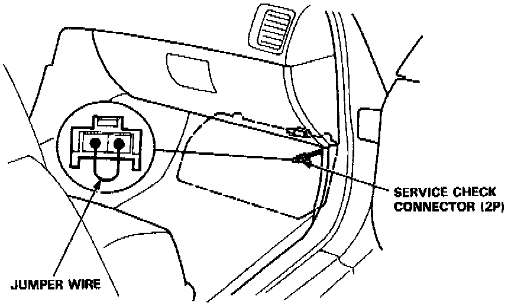

Without Scan Tool
HOW TO DISPLAY AND READ DIAGNOSTIC TROUBLE CODES WITH SCAN TOOLWhen the Malfunction Indicator Lamp (MIL) has been reported on, do the following:

1. Connect the Service Check Connector terminals with a jumper wire as shown. (The 2P Service Check Connector is located under the dash on the passenger side of the car.) Turn the ignition switch on.

2. Note the Diagnostic Trouble Code (DTC): The MIL indicates a code by the length and number of blinks. The MIL can indicate simultaneous component problems by blinking separate codes, one after another. Codes 1 through 9 are indicated by individual short blinks. Codes 10 through 59 are indicated by a series of long and short blinks. The number of long blinks equals the first digit, the number of short blinks equals the second digit.
- If codes other than those listed above are indicated, verify the code. If the code indicated is not listed above, replace the ECM.
- The Malfunction Indicator Lamp (MIL) may come on, indicating a system problem when, in fact, there is a poor or intermittent electrical connection. First, check the electrical connections, clean or repair connections if necessary.
- A/T: The MIL and [D4] indicator light may come on simultaneously when the MIL blinks 6, 7 or 17. Check the PGM-FI system according to the PGM-FI system troubleshooting, then recheck the [D4] indicator light. If it comes on, refer to TRANSMISSION CONTROL SYSTEMS
- The MIL and TCS indicator light may come on simultaneously when the code blinks 3, 5, 6, 13, 15, 16, 17, 35 and 36. Check the PGM-FI system according to the PGM-FI system troubleshooting, then recheck the TCS indicator light. If it comes on, refer to TRANSMISSION CONTROL SYSTEMS.